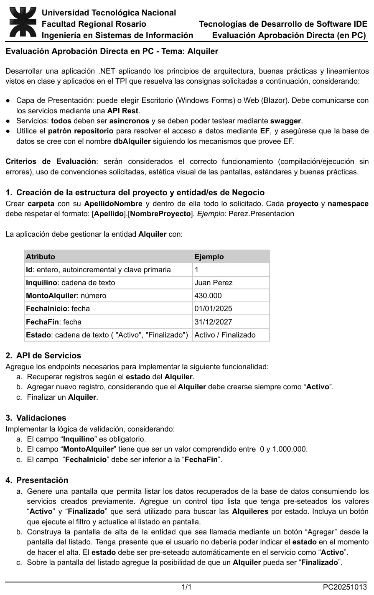

Aprobación directa en PC, 13/10/2025, tema Alquiler
Aprobación directa, 13/10/2025
Enunciado


Propuesta de respuesta
Respuesta no verificada. La propuso Luta Studios con inteligencia artificial y ningún docente la revisó. Puede tener errores.
1. Estructura y entidad
Una carpeta PerezJuan con una solución y tres proyectos. Cambiá Perez por tu apellido en los proyectos y los namespaces.
| Proyecto | Tipo | Qué tiene |
|---|---|---|
Perez.Dominio | Biblioteca de clases | La entidad Alquiler, la interfaz del repositorio y las validaciones |
Perez.Api | ASP.NET Core Web API | El contexto de EF, el repositorio y los endpoints |
Perez.Presentacion | Aplicación de Windows Forms | El listado y el alta |
Perez.Api y Perez.Presentacion llevan una referencia a Perez.Dominio y comparten la entidad, sin DTO. Las notas de la cátedra del 30/10/2024 dicen que «a los fines del examen era válido compartir la entidad». En las propiedades de la solución, elegí como proyectos de inicio la API y la presentación, así arrancan las dos.
Los paquetes NuGet son Microsoft.EntityFrameworkCore.SqlServer y Swashbuckle.AspNetCore en Perez.Api, y Microsoft.AspNet.WebApi.Client, que trae Newtonsoft.Json, en Perez.Presentacion, como en los laboratorios de las unidades 4 y 6.
Id es la clave primaria por convención, así que no hace falta [Key], y SQL Server lo genera solo. [Column] fija el tipo decimal de la columna del monto, que EF pide para no avisar que puede perder decimales.
using System;
using System.ComponentModel.DataAnnotations.Schema;
namespace Perez.Dominio
{
public class Alquiler
{
public int Id { get; set; }
public string Inquilino { get; set; } = "";
[Column(TypeName = "decimal(18, 2)")]
public decimal MontoAlquiler { get; set; }
public DateTime FechaInicio { get; set; }
public DateTime FechaFin { get; set; }
public string Estado { get; set; } = "";
}
}Acceso a datos con el patrón repositorio
La interfaz va en el dominio, con métodos asíncronos.
using System.Collections.Generic;
using System.Threading.Tasks;
namespace Perez.Dominio
{
public interface IAlquilerRepositorio
{
Task<List<Alquiler>> ObtenerPorEstadoAsync(string estado);
Task<Alquiler?> ObtenerPorIdAsync(int id);
Task AgregarAsync(Alquiler alquiler);
Task ActualizarAsync(Alquiler alquiler);
}
}El contexto hereda de DbContext, tiene un DbSet por tabla y crea la base con EnsureCreated, como en el laboratorio de la Unidad 4. Va en una carpeta Datos de Perez.Api, junto con el repositorio, que es el único que usa el contexto.
using Microsoft.EntityFrameworkCore;
using Perez.Dominio;
namespace Perez.Api.Datos
{
public class AlquilerContext : DbContext
{
public AlquilerContext(DbContextOptions<AlquilerContext> options) : base(options)
{
this.Database.EnsureCreated();
}
public DbSet<Alquiler> Alquileres { get; set; }
}
}using System.Collections.Generic;
using System.Linq;
using System.Threading.Tasks;
using Microsoft.EntityFrameworkCore;
using Perez.Dominio;
namespace Perez.Api.Datos
{
public class AlquilerRepositorio : IAlquilerRepositorio
{
private readonly AlquilerContext _context;
public AlquilerRepositorio(AlquilerContext context)
{
_context = context;
}
public async Task<List<Alquiler>> ObtenerPorEstadoAsync(string estado)
{
return await _context.Alquileres.Where(r => r.Estado == estado).ToListAsync();
}
public async Task<Alquiler?> ObtenerPorIdAsync(int id)
{
return await _context.Alquileres.FindAsync(id);
}
public async Task AgregarAsync(Alquiler alquiler)
{
_context.Alquileres.Add(alquiler);
await _context.SaveChangesAsync();
}
public async Task ActualizarAsync(Alquiler alquiler)
{
_context.Alquileres.Update(alquiler);
await _context.SaveChangesAsync();
}
}
}En el appsettings.json de la plantilla, sumá la cadena de conexión con el nombre de la base que pide el enunciado.
"ConnectionStrings": {
"dbAlquiler": "Server=(localdb)\\MSSQLLocalDB;Database=dbAlquiler;Trusted_Connection=True;TrustServerCertificate=True"
}2. API de servicios
Los endpoints son asíncronos, como pide el enunciado, con la API mínima del laboratorio 1 de la Unidad 6. El repositorio llega por parámetro, porque está registrado en Program.cs.
using Microsoft.EntityFrameworkCore;
using Perez.Api.Datos;
using Perez.Dominio;
var builder = WebApplication.CreateBuilder(args);
builder.Services.AddEndpointsApiExplorer();
builder.Services.AddSwaggerGen();
builder.Services.AddDbContext<AlquilerContext>(options =>
options.UseSqlServer(builder.Configuration.GetConnectionString("dbAlquiler")));
builder.Services.AddScoped<IAlquilerRepositorio, AlquilerRepositorio>();
var app = builder.Build();
if (app.Environment.IsDevelopment())
{
app.UseSwagger();
app.UseSwaggerUI();
}
app.UseHttpsRedirection();
app.MapGet("/alquileres", async (string estado, IAlquilerRepositorio repositorio) =>
Results.Ok(await repositorio.ObtenerPorEstadoAsync(estado)));
app.MapGet("/alquileres/{id}", async (int id, IAlquilerRepositorio repositorio) =>
await repositorio.ObtenerPorIdAsync(id) is Alquiler alquiler
? Results.Ok(alquiler)
: Results.NotFound());
app.MapPost("/alquileres", async (Alquiler alquiler, IAlquilerRepositorio repositorio) =>
{
List<string> errores = ValidadorAlquiler.Validar(alquiler);
if (errores.Count > 0)
{
return Results.BadRequest(errores);
}
alquiler.Id = 0;
alquiler.Estado = "Activo";
await repositorio.AgregarAsync(alquiler);
return Results.Created($"/alquileres/{alquiler.Id}", alquiler);
});
app.MapPut("/alquileres/{id}/finalizar", async (int id, IAlquilerRepositorio repositorio) =>
{
Alquiler? alquiler = await repositorio.ObtenerPorIdAsync(id);
if (alquiler is null)
{
return Results.NotFound();
}
if (alquiler.Estado != "Activo")
{
return Results.BadRequest(new List<string> { "Solo se puede finalizar un alquiler en estado Activo." });
}
alquiler.Estado = "Finalizado";
await repositorio.ActualizarAsync(alquiler);
return Results.NoContent();
});
app.Run();| Verbo y ruta | Qué hace | Respuesta |
|---|---|---|
GET /alquileres?estado=Activo | Lista según el estado | 200 |
GET /alquileres/{id} | Trae uno | 200, o 404 si no existe |
POST /alquileres | Alta, siempre en «Activo» | 201, o 400 con la lista de errores |
PUT /alquileres/{id}/finalizar | Pasa a «Finalizado» | 204, 404 si no existe, 400 si no estaba en «Activo» |
El alta pisa el Estado con «Activo», así que aunque alguien lo mande con otro valor, entra como pide el enunciado. Con la API corriendo, Swagger muestra los cuatro endpoints y se prueban desde el navegador.
3. Validaciones
Van en la API, porque según las notas de la cátedra «nuestra API de servicios nunca puede confiarse de que la presentación va a realizar estas validaciones». Un método junta todos los errores, así la pantalla los muestra juntos.
using System.Collections.Generic;
namespace Perez.Dominio
{
public static class ValidadorAlquiler
{
public static List<string> Validar(Alquiler alquiler)
{
List<string> errores = new List<string>();
if (string.IsNullOrWhiteSpace(alquiler.Inquilino))
{
errores.Add("El inquilino es obligatorio.");
}
if (alquiler.MontoAlquiler < 0 || alquiler.MontoAlquiler > 1000000)
{
errores.Add("El monto del alquiler tiene que estar entre 0 y 1.000.000.");
}
if (alquiler.FechaInicio >= alquiler.FechaFin)
{
errores.Add("La fecha de inicio tiene que ser anterior a la fecha de fin.");
}
return errores;
}
}
}«Comprendido entre 0 y 1.000.000» se toma con los dos extremos incluidos. «Inferior a la FechaFin» es estricto, así que la misma fecha en las dos no vale.
4. Presentación
Una clase Conexion con un único HttpClient, con el patrón Singleton como en el laboratorio 3 de la Unidad 6. El puerto 7011 es el del laboratorio. Cambialo por el de applicationUrl en Properties/launchSettings.json de tu API.
using System;
using System.Net.Http;
namespace Perez.Presentacion
{
public class Conexion
{
private static Conexion? _instancia;
public HttpClient Cliente { get; }
private Conexion()
{
Cliente = new HttpClient();
Cliente.BaseAddress = new Uri("https://localhost:7011/");
}
public static Conexion Instancia
{
get
{
if (_instancia == null)
{
_instancia = new Conexion();
}
return _instancia;
}
}
}
}Otra clase consume los servicios. Los métodos son asíncronos porque esperan a la API.
using System.Collections.Generic;
using System.Net.Http;
using System.Text;
using System.Threading.Tasks;
using Newtonsoft.Json;
using Perez.Dominio;
namespace Perez.Presentacion
{
public static class AlquilerApi
{
public static async Task<List<Alquiler>> GetPorEstadoAsync(string estado)
{
var response = await Conexion.Instancia.Cliente.GetStringAsync($"alquileres?estado={estado}");
return JsonConvert.DeserializeObject<List<Alquiler>>(response) ?? new List<Alquiler>();
}
public static async Task<List<string>> AgregarAsync(Alquiler alquiler)
{
var json = JsonConvert.SerializeObject(alquiler);
var contenido = new StringContent(json, Encoding.UTF8, "application/json");
var response = await Conexion.Instancia.Cliente.PostAsync("alquileres", contenido);
if (response.IsSuccessStatusCode)
{
return new List<string>();
}
var texto = await response.Content.ReadAsStringAsync();
return JsonConvert.DeserializeObject<List<string>>(texto) ?? new List<string>();
}
public static async Task<bool> FinalizarAsync(int id)
{
var response = await Conexion.Instancia.Cliente.PutAsync($"alquileres/{id}/finalizar", null);
return response.IsSuccessStatusCode;
}
}
}El listado. Un formulario FormAlquileres con estos controles, puestos con el diseñador.
| Control | Nombre | Para qué |
|---|---|---|
ComboBox | cmbEstado | Elegir «Activo» o «Finalizado» |
Button | btnBuscar | Aplicar el filtro |
DataGridView | dgvAlquileres | El listado. Con SelectionMode en FullRowSelect y ReadOnly en True |
Button | btnAgregar | Abrir el alta |
Button | btnFinalizar | Pasar a «Finalizado» la fila elegida |
Los manejadores de eventos son async, que es el único caso donde vale async void.
using System;
using System.Net.Http;
using System.Threading.Tasks;
using System.Windows.Forms;
using Perez.Dominio;
namespace Perez.Presentacion
{
public partial class FormAlquileres : Form
{
public FormAlquileres()
{
InitializeComponent();
cmbEstado.DropDownStyle = ComboBoxStyle.DropDownList;
cmbEstado.Items.Add("Activo");
cmbEstado.Items.Add("Finalizado");
cmbEstado.SelectedIndex = 0;
}
private async void FormAlquileres_Load(object? sender, EventArgs e)
{
await CargarAsync();
}
private async void btnBuscar_Click(object? sender, EventArgs e)
{
await CargarAsync();
}
private async Task CargarAsync()
{
try
{
dgvAlquileres.DataSource = await AlquilerApi.GetPorEstadoAsync(cmbEstado.Text);
}
catch (HttpRequestException)
{
MessageBox.Show("No se pudo conectar con la API. Fijate que esté corriendo.");
}
}
private async void btnAgregar_Click(object? sender, EventArgs e)
{
FormAltaAlquiler alta = new FormAltaAlquiler();
if (alta.ShowDialog() == DialogResult.OK)
{
await CargarAsync();
}
}
private async void btnFinalizar_Click(object? sender, EventArgs e)
{
if (dgvAlquileres.CurrentRow?.DataBoundItem is not Alquiler alquiler)
{
MessageBox.Show("Elegí un alquiler del listado.");
return;
}
if (alquiler.Estado != "Activo")
{
MessageBox.Show("Solo se puede finalizar un alquiler en estado Activo.");
return;
}
if (await AlquilerApi.FinalizarAsync(alquiler.Id))
{
await CargarAsync();
}
else
{
MessageBox.Show("No se pudo finalizar el alquiler.");
}
}
}
}El alta. Un formulario FormAltaAlquiler sin ningún control para el estado, porque lo pone el servicio.
| Control | Nombre | Para qué |
|---|---|---|
TextBox | txtInquilino | El inquilino |
NumericUpDown | nudMontoAlquiler | El monto, de 0 a 1.000.000 con dos decimales |
DateTimePicker | dtpFechaInicio | La fecha de inicio, con Format en Short |
DateTimePicker | dtpFechaFin | La fecha de fin, con Format en Short |
Button | btnGuardar | Mandar el alta |
Al guardar bien, DialogResult = DialogResult.OK cierra el formulario, y como el listado lo abrió con ShowDialog, recarga la grilla.
using System;
using System.Collections.Generic;
using System.Net.Http;
using System.Windows.Forms;
using Perez.Dominio;
namespace Perez.Presentacion
{
public partial class FormAltaAlquiler : Form
{
public FormAltaAlquiler()
{
InitializeComponent();
nudMontoAlquiler.DecimalPlaces = 2;
nudMontoAlquiler.Minimum = 0;
nudMontoAlquiler.Maximum = 1000000;
dtpFechaInicio.Value = DateTime.Today;
dtpFechaFin.Value = DateTime.Today.AddYears(1);
}
private async void btnGuardar_Click(object? sender, EventArgs e)
{
Alquiler alquiler = new Alquiler
{
Inquilino = txtInquilino.Text.Trim(),
MontoAlquiler = nudMontoAlquiler.Value,
FechaInicio = dtpFechaInicio.Value.Date,
FechaFin = dtpFechaFin.Value.Date
};
try
{
List<string> errores = await AlquilerApi.AgregarAsync(alquiler);
if (errores.Count == 0)
{
DialogResult = DialogResult.OK;
}
else
{
MessageBox.Show(string.Join(Environment.NewLine, errores), "No se pudo guardar");
}
}
catch (HttpRequestException)
{
MessageBox.Show("No se pudo conectar con la API. Fijate que esté corriendo.");
}
}
}
}En Program.cs de Perez.Presentacion, el formulario que arranca es FormAlquileres, con Application.Run(new FormAlquileres()).
Respuesta no verificada. Puede tener errores.
Se armó con Aprobación directa, secciones Las capas, «Lineamientos de la cátedra para el examen», Entity Framework en la aplicación, La API REST, Programación asíncrona, Swagger y La pantalla que consume la API, más DbContext y DbSet del 2° parcial.
Quedó en duda: El material no desarrolla el patrón repositorio. Esta forma, con la interfaz en el dominio y su implementación con EF en la API, es una de varias, y en tu comisión pueden haber visto otra en el TPI. La API va con API mínima, como el laboratorio 1 de la Unidad 6, porque es el que usa async. Con un controlador también vale. Las validaciones también se pueden poner con [Required] y [Range] en la entidad, pero la regla de fechas igual necesita código. La cadena de conexión usa LocalDB y la de tu laboratorio puede ser otra. Swagger viene con la plantilla Web API de .NET 8; en .NET 9 hay que sumar Swashbuckle.AspNetCore, como dice el laboratorio. La lógica de la API y de las validaciones se probó con una versión simulada de EF y de ASP.NET, y la pantalla se compiló con Windows Forms. Falta correrlo entero en Visual Studio con SQL Server. «Comprendido entre 0 y 1.000.000» se tomó con los extremos incluidos.
¿Cómo te fue?
Marcá cada tema del examen.
- Entity FrameworkEntity Framework, en 2° parcial
- API RESTLa API REST, en Aprobación directa
- ValidacionesDbContext y DbSet, en 2° parcial
- Pantalla de listado y alta